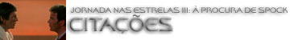

|

STAR TREK III:
THE SEARCH FOR SPOCK
1984

|

Sinopse
comentada
Comentários
Citações
Efeitos
Especiais
Trilha Sonora
Trivia
Ficha
Técnica
O
DVD
A Morte Tornada
Chance
de Vida

Kirk - "The death of Spock is like an open wound. It seems I have left the noblest part of myself back there. On that new born planet."
("A morte de Spock é como uma ferida aberta. Parece que eu deixei a parte mais nobre de mim mesmo lá atrás. Naquele planeta recém-nascido.")
Uhura - "Would you look at that!"
("Dê uma olhada naquilo!")
Kirk - "My friends, the great experiment: the Excelsior. Ready for trial runs."
("Meus amigos, o grande experimento: a Excelsior. Pronta para testes.")
Sulu - "She's supposed to have transwarp drive."
("Ela deve ter motor transdobra.")
Scott - "Aye, and if my grandmother had wheels, she'd be a wagon!"
("Aye, e se minha avó tivesse rodas, seria um vagão!")
Kirk - "Come, come, Mr. Scott. Young minds, fresh ideas. Be tolerant!"
("Calma, calma, sr. Scott. Jovens mentes, idéias novas. Seja tolerante!")
Alienígena - "To your planet, welcome."
("Ao seu planeta, bem-vindo.")
McCoy - "I think that's my line, stranger."
("Acho que essa é a minha fala, estranho.")
Alienígena - "Oh, forgive. I here am new. But you are known, being McCoy from Enterprise."
("Oh, perdão. Eu aqui sou novo. Mas você é conhecido, sendo McCoy da Enterprise.")
McCoy - "You have me at a disadvantage, sir."
("Estou em desvantagem, senhor.")
Alienígena - "Oh, I name not important. You seek I. Message received. Available ship stands by."
("Oh, eu nome não importante. Você procura eu. Mensagem recebida. Nave disponível em prontidão.")
McCoy - "How much and how soon?"
("Quanto e quando?")
Alienígena - "How soon is now. How much is, where?"
("Quando é agora. Quanto é, onde?"
McCoy - "Somewhere in the Mutara sector."
("Em algum lugar do setor Mutara.")
Alienígena - "Oh, Mutara restricted! Take permits many; money more."
("Oh, Mutara proibido! Pegar permissões muitas; dinheiro mais.")
McCoy - "There aren't gonna be any damned permits! How can you get a permit to do a damned illegal thing?! Look, price you name, money I got."
("Não vai haver porcaria de permissões! Como se pede uma permissão para fazer uma droga de coisa ilegal?! Olha, diga o preço, dinheiro eu tenho.")
Alienígena - "Place you name, money I name, otherwise bargain, no."
("Lugar você diz, dinheiro eu digo, de outra forma barganha, não.")
McCoy - "Alright, damn it! It's Genesis! The name of the place we're going is GENESIS!"
("Muito bem, droga! É Genesis! O nome do lugar para onde vamos é GENESIS!")
Alienígena - "Genesis?!"
("Genesis?!")
McCoy - "Yes, Genesis! How can you be deaf with ears like that?!"
(Sim, Genesis! Como você pode ser surdo com orelhas desse tamanho?!")
Alienígena - "Genesis allowed is not! Is planet forbidden!"
("Genesis permitido não é! É proibido planeta!")
Sulu - "The word, sir?"
("A palavra, senhor?")
Kirk - "The word is no. I am therefore going anyway."
("A palavra é não. Eu, por consequência, vou do mesmo jeito.")
Kirk - "How are we doing?"
("Como nós estamos indo?")
McCoy - "How are 'we' doing? Funny you should put it quite that way, Jim. 'We' are doing fine."
("Como 'nós' estamos indo? Estranho que fale desse jeito, Jim. 'Nós' estamos indo bem.")
Kirk - "You're suffering from a Vulcan mind-meld, doctor."
("Você está sofrendo de um elo de mentes Vulcano, doutor.")
McCoy - "That green-blooded son of a bitch! It's his revenge for all the arguments he lost."
("Aquele filho da mãe de sangue verde! É a vingança dele por todas as discussões que perdeu.")
Sulu - "Don't call me 'Tiny.'"
("Não me chame de 'Baixinho'.")
Computador da Excelsior - "Level, please."
("Andar, por favor.")
Scotty - "Transporter Room."
("Sala de transporte.")
Computador da Excelsior - "Thank you."
("Obrigado.")
Scotty - "Up your shaft."
("Enfia no poço.")
Sr. Adventura - "But it's damned irregular. No destination points, no encoded ID's."
("Mas é totalmente irregular. Sem pontos de destino, sem identidades codificadas.")
Uhura - "All true."
("Verdade.")
Sr. Adventura - "So what are we gonna do about it?"
("Então o que vamos fazer a respeito?")
Uhura - "I'm not gonna do anything about it. You're gonna sit in the closet."
("Eu não vou fazer nada. Você vai sentar no armário.")
Sr. Adventura - "The closet? Have you lost your sense of reality?"
("O armário? Você perdeu o senso da realidade?")
Uhura - "This isn't reality."
("Isso não é realidade.")
[Aponta um feiser para ele.]
Uhura - "This is fantasy. You wanted adventure, how's this? The old adrenaline going, huh? Good boy. Now get in the closet."
("Isso é fantasia. Queria aventura, que tal isso? A velha adrenalina correndo, hein? Bom menino. Agora entre no armário.")
Sr. Adventura - "OK..."
("OK...")
Uhura - "Go on."
("Vai logo.")
Sr. Adventura - "I'll just get in the closet. All right! Damn!"
("Já vou entrar no armário. Tudo bem! Droga!")
McCoy - "I'm glad you're on our side!"
("Estou feliz que esteja do nosso lado!")
Scotty - "All systems automated and ready. A chimpanzee and two trainees could run her."
("Todos os sistemas automatizados e prontos. Um chimpanzé e dois trainees poderiam dirigi-la.")
Kirk - "Thank you, Mr. Scott. I'll try not to take that personally."
("Obrigado, sr. Scott. Vou tentar não levar pelo lado pessoal.")
Kirk - "Gentlemen, your work today has been outstanding and I intend to recommend you all for promotion... in whatever fleet we end up serving."
("Senhores, seu trabalho hoje foi excepcional e pretendo recomendá-los todos para promoção... seja qual for a frota em que estivermos servindo.")
Scott - "The more they overthink the plumbing, the easier it is to stop up the drain."
("Quanto mais complicado é o encanamento, mas fácil é interromper o fluxo.")
Kruge - "I've come a long way for the power of Genesis, and what do I find? A weakling human, a Vulcan boy, and a woman!"
("Venho de muito longe pelo poder do Genesis, e o que eu encontro? Um fraco humano, um garoto Vulcano e uma mulher!")
Kirk - "David, what went wrong?"
("David, o que deu errado?")
David - "I went wrong."
("Eu dei errado.")
Kirk - "Klingon bastard! You killed my son!"
("Klingon bastardo! Matou meu filho!")
Kirk - "My God, Bones, what have I done?"
("Meu Deus, Magro, o que eu fiz?")
McCoy - "What you had to do; what you always do: turn death into a fighting chance to live."
("O que tinha de fazer; o que sempre faz: tornar a morte uma chance de luta pela vida.")
Kirk - "Sorry about your crew, but, as we say on Earth, c'est la vie."
("Perdão por sua tripulação, mas, como dizemos na Terra, c'est la vie.")
Kirk - "You! Help us or die!"
("Você! Ajude-nos ou morra!")
Maltz - "I do not deserve to live."
("Eu não mereço viver.")
Kirk - "Fine. I'll kill you later."
("Ótimo. Eu te mato mais tarde.")
Maltz - "Wait! You said you would kill me."
("Espere! Você disse que ia me matar.")
Kirk - "I lied."
("Eu menti.")
Kirk - "Because the needs of the one outweigh the needs of the many."
("Porque as necessidades de um se sobrepõem às necessidades de muitos.")
Spock - "Jim. Your name... is Jim."
("Jim. Seu nome... é Jim.")